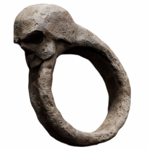
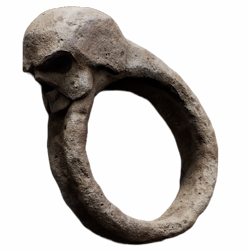
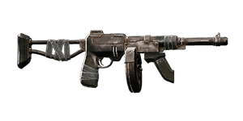
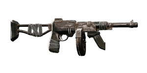

The Awakened King DLC for Remnant II is out, along with exciting and powerful items that players can play and experiment with to create new and interesting Remnant 2 Builds. But the greatest addition is the latest Archetype, the Royal Swords for Night and Sir Flame, a very exciting Archetype that plays with status effects and can unleash them on enemies. It’s been a while since we released a Build for Remnant II, but with The Awakened King now available, this is the best time to do so.
Remnant 2: Royal Swords Guardian of Her Majesty Build Guide
The first of this lineup is the Royal Swords Guardian of Her Majesty, a fun and engaging Remnant 2 Build that takes advantage of the Royal Swords for Night and Sir Flameand the Archon’s special abilities. This Remnant 2 Build heavily relies on the Archon‘s Cornell 4th Form Skill to deal a good amount of damage, and bolsters it further with deadly status effects from the Ritualist repertoire.
This Remnant 2 Build was designed to consistently skip or reduce the cool-down phase of both Royal Miasma and Knight Sir 4th Form, allowing us to use both skills frequently in combat and focus more on dealing damage, while using Mods in between. A Build perfect for clearing enemy waves and taking down Bosses with a unique playstyle. Note that all the items and Archetypes’ locations can be found on our official Remnant 2 Wiki but we will provide the Royal Swords for Night and Sir Flame item locations.

Remnant 2: CANT BE BOTHERED
Taking to long

We’ll be starting with the ArchonNot funny anymore bit over cant be bothered Not funny anymore bit over cant be bothered Not funny anymore bit over cant be bothered Not funny anymore bit over cant be bothered Not funny anymore bit over cant be bothered Not funny anymore bit over cant be bothered
Not only does the Havoc FormNot funny anymore bit over cant be bothered Not funny anymore bit over cant be bothered Not funny anymore bit over cant be bothered Not funny anymore bit over cant be bothered Not funny anymore bit over cant be bothered Not funny anymore bit over cant be bothered Not funny anymore bit over cant be bothered Not funny anymore bit over cant be bothered Not funny anymore bit over cant be bothered Not funny anymore bit over cant be bothered Not funny anymore bit over cant be bothered Not funny anymore bit over cant be bothered Not funny anymore bit over cant be bothered Not funny anymore bit over cant be bothered Not funny anymore bit over cant be bothered
The Archon’s Perks also play a pivotal role in this Remnant 2 Build. Having Tempest as a Prime Perk, which increases overall mod power generation, is a welcome addition as we will be playing with Mods later on. The Damage Perk Amplify is a strong addition as well, that further boosts Mod Damage overall.
The Archon’s Utility Perk: Spirit Within reduces Mod Power requirements and refunds, ensuring that we can almost always cast Mods when doing rotations in Combat. Lastly, the Power Leak Relic Perk grants us the ability to generate Mod Power upon relic usage at any point we desire.

The Ritualist Archetype

The Ritualist is the latest DPS Archetype that The Awakened King DLC added and a very interesting one to play with. A versatile Archetype that bases its damage output on prolonged multiple-status effects inflicted on enemies. For this Remnant 2 Build, we will be using the Miasma Skill that will effortlessly apply Bleeding, Burning, Overloaded, and Corroded to all enemies within fifteen meters.
Each of these status effects mentioned deals damage over time to targets, making this skill a powerful one that will bolster overall DPS. Each of the status effects mentioned can last for a good while, thanks to the Ritualist’s Affliction Main Trait which will be discussed later on. Its Damage Perk Wrath is a total beast as well, adding 18% Critical Chance and 20% more damage to enemies affected by Negative Status effects.
To get this Archetype you need to progress in the new area in the DLC. When reaching the central area that looks like an inner slum, you will eventually notice a series of lined-up boats that you can use to reach certain places. One of these boats will lead you to a hidden tunnel or underground section where a cave is located.
Head inside the cave and soon you will notice a witch who’s in the middle of the ritual. Take her out and pick up the Ragged Poppet on the ground and bring it to Wallace to unlock the Ritualist Archetype.
Remnant 2 Royal Swords Guardian of Her Majesty Build – Weapons
Let us now take a look at equipment we’ll be using for this Remnant 2 Build, with some suggestions. As mentioned previously, the main goal of this build is to skip the Skill Cooldowns of Miasma and Havoc Form, so players can use the said Skills much more frequently in combat.
 
Resetting a skill cooldown is possible by taking advantage of the Devoured Loop Ring. A ring that grants the player the ability to reset their Skill Cooldowns with a 1% chance in every Critical Hit that they deal to enemies. In this fashion, we need every critical chance to augment that we can get to achieve this goal.
Unlocking this ring is a different story so players who do not have the said ring can explore alternatives that we will be discussing as well. Let’s begin with Weapons first:
Long Gun – Chicago Typewriter
We need as many critical hits as we can get so it is advisable to use an automatic Long Gun like the Chicago Typewriter. Because of its generous magazine capacity and ammo reserves, scoring Critical Hits will be an easy task.
Increasing Critical Chance and Critical Damage is the Momentum‘s job. Thus, we find this to be the best Mutator for this setup, and is simply one of the best Mutators in the game.
For the Mod, I picked the Firestorm Mod due to its insane firepower and damage over time that can last for 15 seconds. Since the build is concentrated on Skill usage, this Mod let me use it and do its thing while I can focus on dealing damage while in Havoc Form.
 
Handgun – Nebula
The stream of superhot Acid gas that can inflict Corroded to targets by using the Nebula is perfect for this build. However, I picked this Handgun because of its Mod, the Nano Swarm. It unleashes a swarm of Nanomachines that seek nearby targets with a very reasonable range and damage the target over time.
Switch to Nebula, fire the Mod and you are off to the races. When the Firestorm and Nano Swarm stack together, it works like a charm when your goal is to deal tons of damage over time. These Mods score critical hits and can help us reset our Skill Cooldowns as well, and these alone pack quite a punch.

Melee Weapon – Steel Scythe
The melee weapon on the other hand can be anything according to your preference. We will not be using any in this Remnant 2 Build but just in case you are curious, I am using the Steel Scythe just for the aesthetics. I paired it with one of the latest Mutators, the Tainted Blade. This Mutator increases the weapon’s damage when the target is suffering from a Corroded Status.

Remnant 2 Royal Swords Guardian of Her Majesty Build Trinkets
Now that the weapons are out of the way, it is time for us to discuss the rings and amulet. The reason why this build works is it consists of arguably the best rings in the game.
Amulet – Nightweaver’s Grudge
For the Amulet, we do have a handful of options to consider, but for this setup I highly suggest using the Nightweaver’s Grudge to gain an additional 20% Critical Chance and Haste when your character is near an entity suffering from a Status Effect. With this Remnant 2 Build, it’s easy to achieve this condition.
You will be spamming Miasma in combat and your character is not excluded from the set condition. So we will be equipping a specific ring that will allow us to self-inflict a bleed status later on so the Critical Chance and Haste from the Nightweaver’s Grudge will be in effect all the time.

Ring – Devoured Loop Ring
As mentioned previously, the Devoured Loop Ring is one of the suggested rings for this setup. The Devoured Loop can give us the chance to reset the Skill Cooldowns of Miasma and Havoc Form with every Critical Hit we deal to our enemies. Remember, this is the main reason why we are stacking as many Crit augments as we can.

Ring – Burden of the Gambler
The second ring that I would like to use is the Burden of the Gambler. This ring disables enemy weak spots which I found horrible. However, the caveat is, that Havoc Skill can’t hit weak spots anyway and this Remnant 2 Build aims to spam this skill during combat. The additional 20% Critical Damage and 10% Critical Chance are so enticing for this build, making it one of the essentials.

Ring – Atonement Fold Ring
For the third ring, I am using the Atonement Fold Ring to self-inflict Bleed onto myself and increase the build’s Critical Chance by another 10%. This is the ring that I mentioned earlier that will work hand in hand with the Nightweaver’s Grudge. This is also one of the new rings that you can get from playing the DLC for the first time by exploring one of the latest dungeons.

Ring – Kinetic Cycle Stone
Down to the last ring, I like using the Kinetic Cycle Stone which increases Mod and Skill Cast Speed by 20%. Skill Cast Speed affects the Havoc Form. The higher the Skill Cast Speed percentage you have, the more damage that the Havoc Form can output.
Remnant 2 Royal Swords Guardian of Her Majesty Build Relics and Traits
Players will get to choose which Relic they prefer in this Remnant 2 build. If you are worried about healing, this build’s Traits can cover it for us later on. I use the Tranquil Heart to take advantage of its passive 2 Health Regeneration per second, and upon using it, this Relic doubles all Health Regeneration for 15 seconds.
Relic Fragments are a different story as they can give great stat boosts to this build. I highly suggest using Elemental Damage Boost, Skill Damage Boost, and Mod and Skill Cast Speed Boost. These fragments are tailored to improve the overall DPS of our Mods, and the Havoc Form Skill.
I had so much fun playing with Traits lately since the cap was raised to 85, which gave me more options. The Royal Swords Guardian of Her Majesty Build will give anyone the freedom to use the Traits they think will work best, so feel free to be creative around it but personally, this is my setup.
Choosing the Archon Archetype will grant the build with a free level 10 Flash Caster which grants the build with Mod and Casting Speed increases. While the Ritualist Archetype’s free trait which is Affliction, increases status effects duration by 100%. Since we are applying constant status ailments to our targets, this trait works perfectly.
A level 10 Triage Trait can help improve this build’s overall health regeneration capability. Next would be a level 10 Regrowth Trait that keeps our character healthy, especially when offsetting the Bleeding Status Effect that the Atonement Fold Ring inflicts. I also upgraded Vigor to level 10 to increase overall survivability.

This Remnant 2 Build plays with a lot of Mods and Skills so I suggest you upgrade the Spirit Trait to level 10 to enjoy an additional 20% Mod Power Generation, following up with level 10 Expertise that reduces your Skill Cooldowns by 20%. Although this build aims to skip our Skill Cooldowns as much as possible, having Skill Cooldown reductions may help if the Devoured Loop Ring fails to reset our skills which will be discussed later.
A level 10 Siphoner skill is a must, as this will be our main source of healing. You will be throwing a lot of damage to your enemies so expect to regain any lost health in a short period especially when in Havoc Form. I upgraded the Fitness Trait to level 10 as it increases Evade Distance by 30%. I find this trait useful especially when the Havoc Form expires. This Remnant 2 Build only wears light armor, and will unlikely survive most of the Boss attacks in Apocalypse so you will need to rely purely on dodging.
The next trait on the list is a level 10 Footwork. Your movement speed while doing the Havoc Form Lightning Attacks is directly affected by this trait. I highly suggest speccing to Footwork as there are many instances that you can just avoid attacks while you can move freely around the arena while zapping your target without the need of Blink Evade, leading to more DPS.

The last suggested Trait for this build is the Glutton Trait to quicken our Relic usage speed. Upon consuming a relic, the Ritualist’s Relic Trait allows us to transfer any status ailments to the surrounding enemies, and don’t forget that this build always has the Bleed Status effect active. Meaning, that in every Relic charge that you consume, you inflict Bleed on nearby targets. This is a convenient way to ensure that your enemies will always have a negative status effect and enjoy that damage boost from the Ritualist Damage Perk as well. The Archon’s Relic perk will also provide you an instant Mod Power just in case you need the boost.
That is already 85 points in total. I do want to mention that Level 10 Untouchable is a great trait as well since we will be relying on pure dodging with this build when not in Havoc Form. Lastly will be level 10 Kinship as the Firestorm can kill us if we get caught from it or your mates when playing in Multiplayer. Feel free to experiment and add the traits that will suit your playstyle.

Concoction
Now for the Concoction, I am running this Remnant 2 Build with the Xenoplasm to have an additional 10% skill cooldown reduction, especially if the Devoured Loop failed to reset our cooldowns, or use Mudtooth’s Tonic to have a tiny bit of added survivability.

Royal Swords Guardian of Her Majesty Build – Gameplay Rotation
The Royal Swords Guardian of Her Majesty is an easy Remnant 2 Build to play with. As mentioned previously, the main goal of this build is to spam its Mods and Skills with as little downtime as possible. We need to score as many Critical Hits as we can and this is the rotation that I go for usually.
When the battle starts, cast Nano Swarm and let it do its thing. Target and fire the second Mod which is Firestorm. Cast Miasma to inflict, Bleeding, Burning, Overloaded, and Corroded to the target. Then lastly, enter Havoc Form and use Lightning Attacks to deal serious damage to the enemy.
The overall total damage from the Mods, Status effects, and Havoc form is huge, and it mostly takes off huge chunks of a boss’ health in one rotation. However, the biggest caveat is we need to rely on RNG to possibly reset our Skill Cooldowns while the Mods and Havoc Form play out.

We do have a 1% chance to reset Miasma and Havoc’s cooldowns with every Critical Hit that the Mods and Lightning attacks inflict on our target. While the Devoured Loop Ring can fail to reset our skill in our rotation, this is where we need to keep on using our Mods and shooting with the Chicago Typewriter, and hope it will reset both skills.
The Chicago Typewriter’s Fire Rate and ammo capacity will give this Remnant 2 Build an ample amount of chance to score critical hits because of the Momentum Mutator slotted to it., combined with our overall Critical Chance percentage.
During each rotation, the ideal scenario is that both skills already skipped their cooldown before the Havoc Form expires. Most of the time, both Mods are usable after each rotation or after the Havoc Form expires so use them accordingly and Cast Miasma to reapply all the negative status effects and enter Havoc Form and deal damage. Rinse and repeat.
We can mostly dodge attacks effectively thanks to the footwork Trait as we have so much mobility while unleashing Lightning Strikes. However, do not forget to use Blink Evade if you are cornered or a wide AOE attack is coming.
Final Tips
A couple of things that I want to share about this Remnant 2 Build before we discuss some of the potential issues that you can encounter with it. Instead of Nightweaver’s Grudge Amulet, you can use the Hyperconductor to gain double Skill Charges but increase your Skill Cooldowns by 50% and reduce Mod Power Generation by 15%.
By equipping the Hyperconductor, you will have two sure skill rotations that you can unload into your targets and deal a considerable amount of damage. However, your Critical Chance will be lower since the 20% Crit Chance from the Nightweaver’s Grudge is gone. And it is possible that you might have a hard time resetting your cooldowns and you will have longer cooldowns after the 2 sets of rotations.
Probability Cord is a ring that increases your Critical Damage by 30% and also works well in this build since you will be dealing a lot of critical hits anyway and additional damage is a welcome addition.

If you do not have the Devoured Loop Ring unlocked, I’ve been using the Sapphire Dreamstone that allowed me to have a chance to reduce my Skill Cooldowns by 3% in every Critical Hit. This Ring can help you lower your cooldowns drastically especially with this build.
If you do not prefer the Firestorm Mod for various reasons, I suggest picking up the Corroded Rounds Mod instead, which increases our Range Critical Chance by 10%, and can help you land more crits with the Chicago Typewriter.
The Royal Swords Guardian of Her Majesty is by no means a perfect Remnant 2 Build. Thus I suggest experimenting with the Rings and unlocked traits that you have depending on the boss you are fighting. However, the one I suggested is the general setup that I am using, and worked well in most of the boss fights in the game.

One of the biggest issues I had in this build is obviously when fighting Elemental Resistant buffed bosses since you rely on elemental attacks especially when in Havoc Form. You can still win in these kinds of fights, it’s just that it will be slower since you are weaker in terms of damage.
Lastly, there are flying enemies that the Havoc Form’s Lightning Attack can’t simply reach, making them more challenging, while ground-typed bosses on the other hand are much easier to deal with.
Be sure to check out our Beginner Guide and head to our Remnant 2 wiki for the latest info.
Stay tuned for more Remnant 2 content as we update the other Builds, and be sure to drop by our Discord if you have questions about the game. If you need something specific, check out our Remnant 2 wiki as well as our Remnant 2 Guides.
1 response to “Remnant 2: Royal Swords Guardian of Her Majesty Build Guide”
Is there anyone to use this build if you haven’t completed the game on nightmare?

Log in to leave a Comment